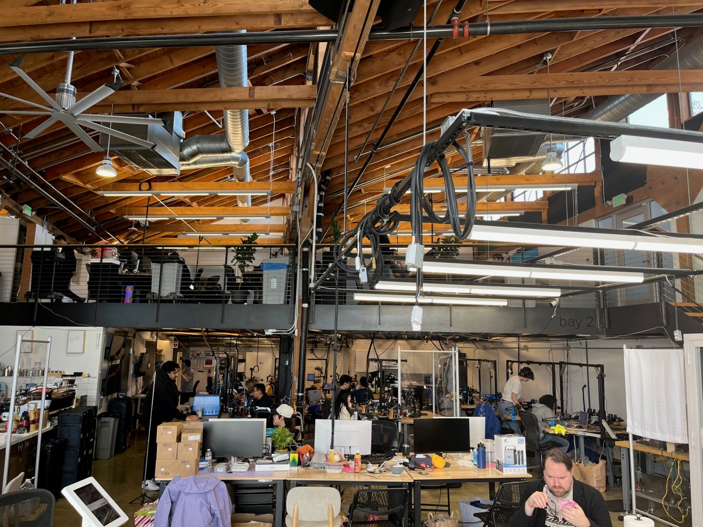
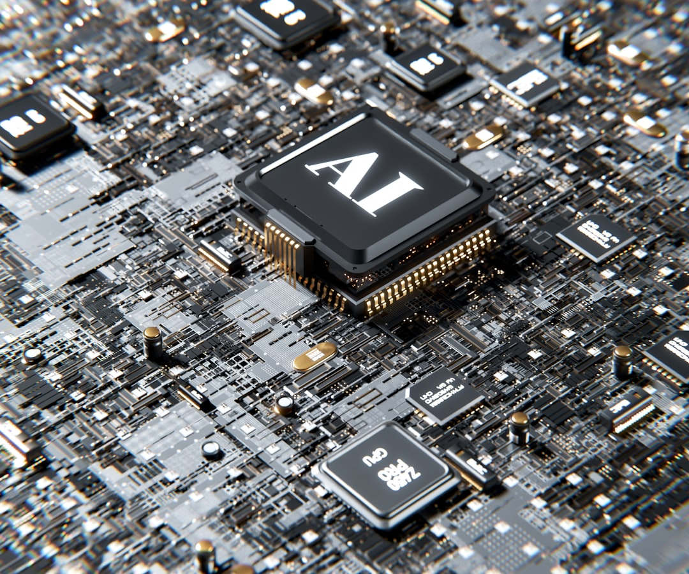
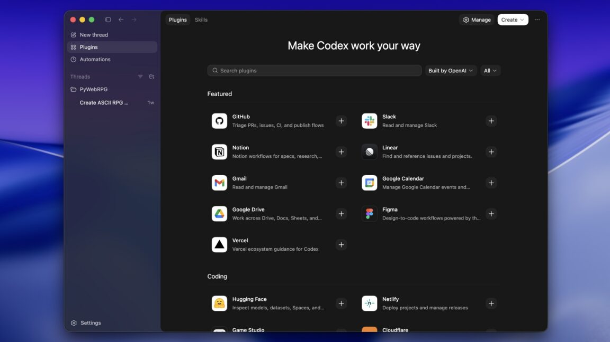
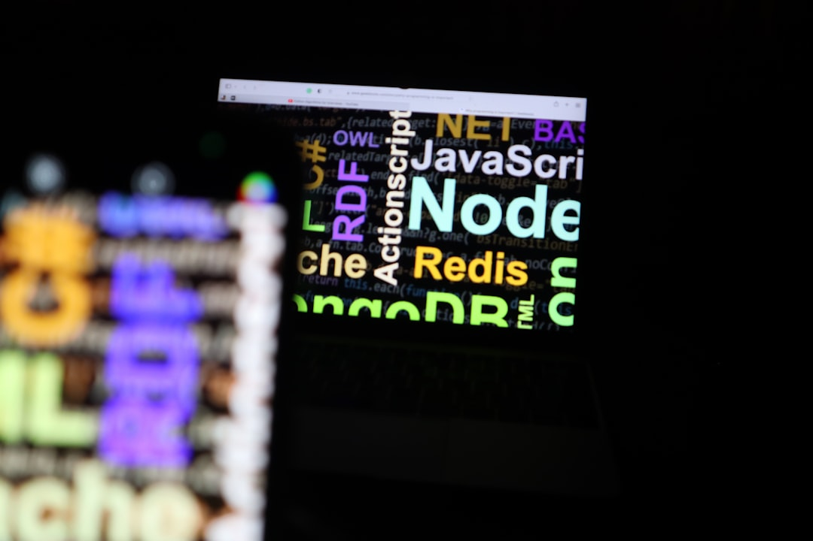
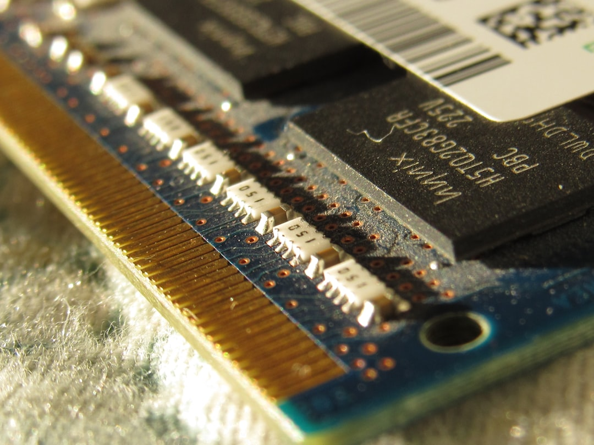
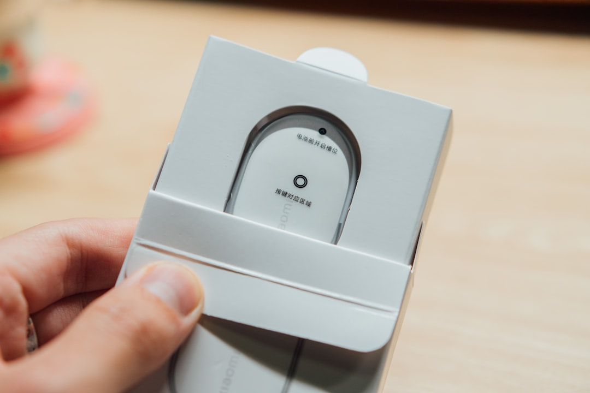

AI DAILY
AI 行业日报
2026-03-28 · 精选 10 条
01融资收购
软银借400亿赌OpenAI年内上市
400亿美元，12个月无担保。软银拿下这笔贷款，用来覆盖对OpenAI 300亿美元的投资承诺。贷方是摩根大通和高盛，加上四家日本银行
这笔贷款一年内必须偿还或再融资。多家媒体报道OpenAI今年大概率上市，届时软银持有的股权流动性足以还债。软银对OpenAI的总押注已超过600亿美元
INSIGHT
一年期无担保，银行赌的不是软银的信用，是OpenAI的IPO时间表。一位投行朋友说，这种贷款结构本身就是在给市场发信号——上市日期基本锁定了
02融资收购
具身智能独角兽PI再融10亿，估值四个月翻倍

"想象一下ChatGPT，但控制的是机器人。"Physical Intelligence联合创始人Sergey Levine这样描述公司目标。这家成立两年的旧金山机器人公司，正在谈新一轮约10亿美元融资
Founders Fund领投，Lightspeed和Thrive Capital跟投。估值将超110亿美元，四个月前才56亿。公司只有80人，还没有商业化时间表
INSIGHT
80个人，没有商业化计划，四个月估值翻倍。联合创始人说得很直白——"我们能投入的算力没有上限"。做这行的人都知道，这句话的意思是烧钱速度也没上限
03行业动态
台积电3nm产能到顶，AI芯片厂商排队分产能

先进制程产能也有"三六九等"。台湾《电子时报》报道，台积电3nm制程几乎到达产能极限，云端AI需求把产能吃得干干净净
英伟达、AMD、博通等AI芯片大厂拿走最高优先级。苹果和联发科作为长期客户排第二梯队。其他厂商只能往后排，部分网络通信芯片的产能被严重挤压
INSIGHT
做芯片设计的朋友说，现在不是你有钱就能买到产能，得看你是谁。3nm的排队名单，基本就是全球AI产业链的权力排序图
04人事变动
林俊旸离开千问，阿里AI团队进入换血期
3月4日凌晨，阿里千问技术负责人林俊旸在X上发了一句"bye my beloved qwen"。帖子阅读量超360万，是当天全球AI领域最受关注的事
离职原因不是技术路线分歧。随着千问从项目升级为集团战略，阿里开始引入更多高层技术人才，林俊旸的权限被调整。同天，后训练负责人余博文也提交了辞职
INSIGHT
一个核心成员回复说"我知道离开不是你的选择"。千问在Hugging Face有6亿下载量，月活2亿。但大公司做到这个规模，团队创始人的命运往往就是被"职业化"替代
05产品发布
OpenAI Codex上线插件系统，追赶Claude Code生态

Codex不只写代码了。OpenAI给它加了插件系统，可以一键接入GitHub、Gmail、Cloudflare、Vercel等外部服务
所谓"插件"其实是技能提示词、应用集成和MCP服务器的打包组合。这些功能以前就能手动配置，现在只是做了一键安装。Ars Technica称这是在追赶Claude Code和Gemini CLI已有的能力
INSIGHT
一键安装听着方便，但做开发工具的人都知道，生态不是一个插件商店能追出来的。Claude Code的优势在社区已经跑了几个月了，这个时间差不好补
06政策监管
NeurIPS紧急撤回审稿限制，中国AI学者险遭集体排除

全球最大AI学术会议NeurIPS一周内经历了政策发布、大规模抗议和紧急撤回。起因是新提交手册中，审稿限制扩大到了美国制裁实体清单上的所有机构
腾讯、华为等中国公司的研究者将被禁止参与同行评审。中国AI社区威胁抵制。NeurIPS随后承认是"法律团队沟通失误"，将限制范围缩回到SDN名单
INSIGHT
DGA-Albright Stonebridge的Paul Triolo说得很直接——吸引中国研究者参加NeurIPS对美国有利。但现在的政治气氛下，基础研究想不被卷进去越来越难了
07技术突破
万行级AI代码涌入Node.js，维护者怒了

约14000行代码，66个文件。Node.js技术委员会成员Matteo Collina提交了一个PR，给Node.js加入全新的虚拟文件系统功能。他说自己"用了大量Claude Code的token"
长期贡献者Fedor Indutny公开质疑：AI生成的代码大量涌入核心库，维护者的审查负担急剧上升。Collina回应说所有代码都经过了人工审查
INSIGHT
争议的核心不是代码质量。一个Node.js维护者说，问题在于AI让提交PR的成本降到了接近零，但审查成本一点没降。这个不对称正在消耗开源社区的耐心
08融资收购
SK hynix拟赴美IPO募140亿，内存短缺倒逼产能扩张

内存荒有了新变量。韩国存储芯片巨头SK hynix正在考虑赴美上市，募资规模可能达到100亿至140亿美元
资金将用于扩建产能，缓解被称为"RAMmageddon"的全球内存短缺。Sony已经暂停了存储卡销售，PS5因元器件成本上涨全球提价
INSIGHT
SK hynix的IPO如果落地，不只是一个融资事件。做硬件的人说，谁先把HBM产能建起来，谁就卡住了AI训练的咽喉。这笔钱的去向比金额更值得关注
09产品发布
钉钉CLI开源接入Claude Code，国内首个对接Anthropic

3月27日，钉钉宣布开源其命令行工具DingTalk CLI，支持直接接入Claude Code作为AI后端
开发者可以在终端中通过钉钉CLI调用Claude的能力，完成代码审查、文档生成等任务。还支持Cursor等AI编程环境。首批开放10项核心产品能力，Apache-2.0协议
INSIGHT
有意思的是方向。国内大厂的AI产品都在推自家模型，钉钉反过来主动接了Claude。做企业工具的朋友说，用户不在乎模型是谁家的，只在乎好不好用
10市场数据
Waymo无人出租车订单两年涨10倍

10倍增长，不到两年。Waymo的周付费无人驾驶订单量从2024年5月的5万次涨到现在50万次，覆盖10个美国城市
TechCrunch的图表显示增长曲线从2025年下半年开始急剧变陡。Waymo目标年底达到每周100万次，正在准备进入更多城市
INSIGHT
10倍增长的背后有一个很实际的原因——乘客坐过一次之后复购率极高。一个在湾区的朋友说已经完全不打Uber了，便宜、准时、不用社交
由 Zayen知览 整理 · 构建者视角